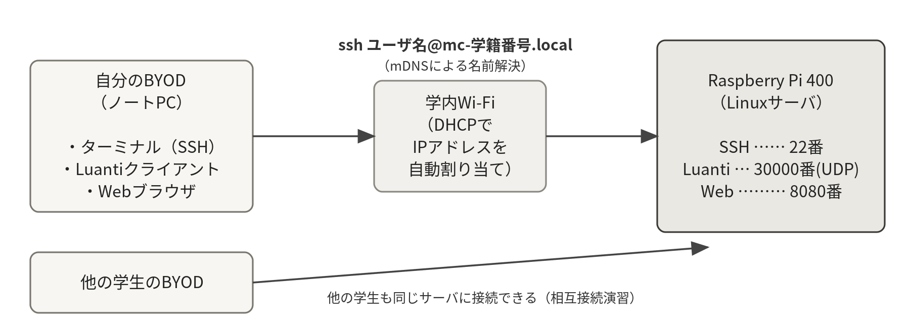

01はじめに
本実習では、Linuxサーバの構築および運用管理の基本を学ぶ。題材として、オープンソースのマルチプレイゲーム「Luanti（ルアンティ、旧称Minetest）」のサーバを取り上げ、全6回を通して「自分専用のゲームサーバを構築し、公開し、運用する」ことに取り組む。LuantiはMinecraftによく似たボクセル型のサンドボックスゲームで、クライアントもサーバも無料で利用できるため、全員が自分のPCから実際に接続し、遊びながら学ぶことができる。
ゲームサーバは、Webサービスと同じく「多数の利用者が接続する本物のサーバ」である。サーバの構築、サービスの常時稼働、利用者（プレイヤー）の管理、負荷の監視、ログの調査、バックアップと復旧、コンテナによるモダンな運用、本実習で扱う内容はすべて、実際のインフラエンジニアが日常的に行っている業務そのものである。楽しみながら手を動かすうちに、ひとりで簡単なサーバの構築や運用管理ができるようになることを目的とする。
1.1 本実習の進め方
各回には達成すべき目標と、その達成条件（確認項目）が設定されている。確認項目をすべて満たすことがその回のゴールである。
- 目標：その回に達成すべきこと。冒頭のミニ講義で背景知識を確認した後、各自のペースで実習を進める。
- 確認項目：目標の達成条件。達成したら、日時・実行したコマンド・確認結果を「実験記録」（各自のノートまたはテキストファイル）に残す。実験記録は最終課題の提出物の一部となる。
- 発展課題：早く終わった人向けの課題。取り組みは任意だが、最終課題のテーマ選びのヒントになる。
わからないことがあれば、まず自分で調べる（エラーメッセージを読む・検索する・生成AIに聞く）こと。それでも解決しなければ教員・支援員に質問する。「調べて解決する力」自体が、本実習で身につけてほしい最も重要なスキルである。
1.2 全体スケジュール
| 回 | テーマ | おもな内容 |
|---|---|---|
| 第1回 | OSの導入とLinuxの基本操作 | OS導入、SSH接続、Linuxの基本操作、テキストエディタ |
| 第2回 | Luantiサーバの構築とサービス化 | パッケージ管理、Luantiの導入、サービス化、ファイアウォール |
| 第3回 | ユーザ管理と監視 | パーミッション、ユーザ管理、非root運用、監視、ログ解析 |
| 第4回 | バックアップと自動化 | バックアップ、シェルスクリプト、cron、復旧訓練、障害対応 |
| 第5回 | Dockerによる再構築とWeb監視 | Docker、コンテナによる再構築、Web監視ページ |
| 第6回 | 最終課題 | 総合演習（制作＋技術記事の執筆・公開） |
1.3 補足資料について
本指導書は実習中に手を動かすための手引きであり、技術の背景や「なぜそうするのか」の詳しい説明は、別冊の補足資料「Linuxサーバ構築・運用の基礎知識」にまとめてある。実習後の復習、疑問点の調査、最終課題の深掘りには補足資料を参照すること。各回と補足資料の章の対応は次のとおりである。
02注意事項
2.1 BYODの持参について
本実習では、サーバ環境としてRaspberry Pi 400を1人1台貸与する。Raspberry Pi 400はヘッドレスサーバ（モニタを接続しないサーバ）として運用し、操作は各自のノートPC（BYOD）からSSHで行う（第1回冒頭のセットアップのみモニタを使用する）。毎回必ずBYODを持参すること。
2.2 評価について
最終課題（技術記事＋実験記録）を100点満点で評価する。評価は、教員によるチェックリスト評価（60点）と、学生相互評価（40点）の2軸で行う。詳細は第6回の章に示す。各回の確認項目の達成記録（実験記録）も最終課題の提出物の一部となるため、毎回確実に記録すること。
2.3 生成AIの利用について
本実習では、ChatGPT等の生成AIを用いて学習することに制限は設けない。エラーの原因調査や、実習で触れた内容以外の学習に積極的に活用してよい。ただし、最終課題については利活用方法に制限を設けるため、第6回の章に示すルールを必ず確認すること。規則を破った場合、最終課題の点数を0点とする。
2.4 ネットワーク利用上の注意
本実習では学内Wi-Fiを利用する。以下を厳守すること。
- 他人のサーバやBYODに対して、許可なくアクセス・攻撃・負荷試験を行わないこと（相互接続演習など、指示がある場合を除く）。
- サーバを学外（インターネット）に公開しないこと。本実習の範囲は学内ネットワーク内での公開に限る。
- パスワードは推測されにくいものを設定し、他人と共有しないこと。
- 許可なく他人のコンピュータにアクセスする行為は、不正アクセス禁止法や学内規程に抵触しうる。演習は指導書と教員の指示の範囲でのみ行うこと。
2.5 Luantiクライアントの準備
第2回以降、構築したサーバへの接続確認にLuantiのクライアントを使用する。Luantiはオープンソースソフトウェアであり、クライアントは無料で入手できる。第2回までに次の準備をBYODで済ませておくこと。
- Luanti公式サイト（https://www.luanti.org/）のDownloadページから、自分のOS（Windows／macOS）向けのクライアントを入手してインストールし、起動できることを確認する。
- 表示は設定（Settings → Language）から日本語に変更できる。
- バージョンは当日指示するものに近い5.x系を使うこと（クライアントとサーバのバージョンが大きく離れると接続できない場合がある）。
アカウントの事前作成は不要である。Luantiのアカウントは各サーバへの初回接続時に作られる（この仕組みは第3回で詳しく学ぶ）。
03実験環境
3.1 使用機器とソフトウェア
| 項目 | 内容 |
|---|---|
| サーバ機 | Raspberry Pi 400（CPU: Cortex-A72 4コア 1.8GHz、メモリ: 4GB） |
| ストレージ | microSDカード（32GB以上） |
| OS | Raspberry Pi OS Lite（64-bit） ※デスクトップ環境なしの軽量版 |
| サーバソフト | Luanti（旧Minetest。オープンソースのゲームエンジン）＋ Minetest Game |
| 実行環境 | Luantiサーバ本体（aptで導入）、Docker（第5回で導入） |
| 操作端末 | 各自のBYOD（Windows / macOS。ターミナルとSSHクライアントを使用） |
| ネットワーク | 学内Wi-Fi（DHCP）。サーバへの接続はホスト名（mDNS）またはIPアドレスで行う |
Raspberry Pi 400はキーボード一体型のコンピュータであるが、本実習ではキーボードとしては使わず、「小さなLinuxサーバ」として扱う。データセンターのサーバをリモートから管理するのと同じ構図である。

※ Luantiサーバは軽量で、メモリ4GBのRaspberry Pi 400でも余裕を持って動作する。それでも「サービスが使う資源」と「OSに残す資源」を分けて考える習慣は重要であり、実際の使用量は第3回の監視の演習で自分の目で確かめる。
各回の実習
付録
基礎知識（補足資料）
補足資料「Linuxサーバ構築・運用の基礎知識」の全11章と付録である。